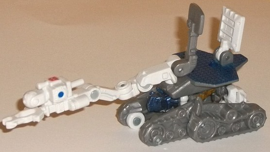
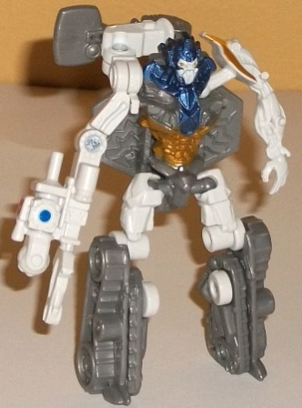
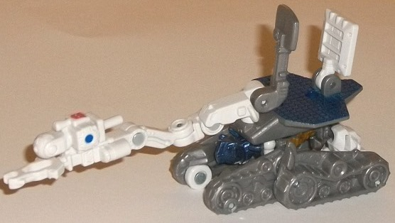
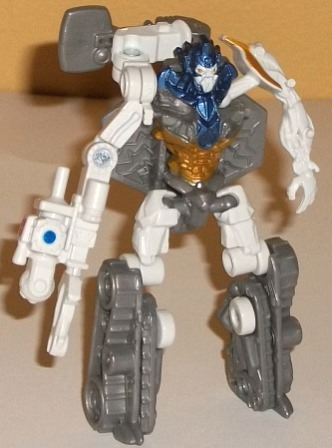
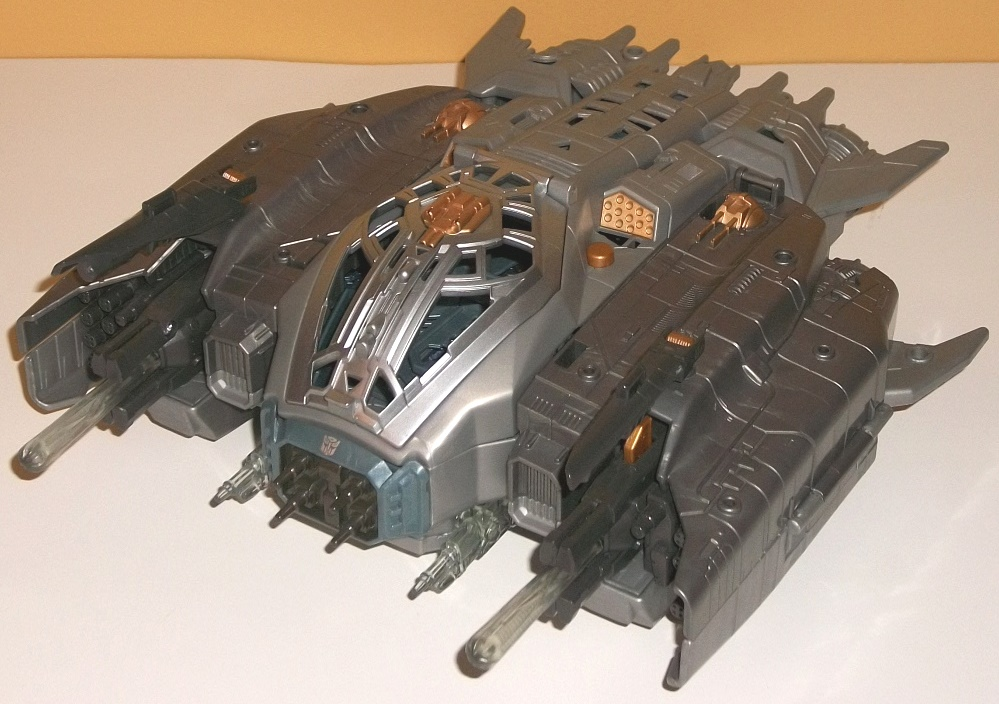
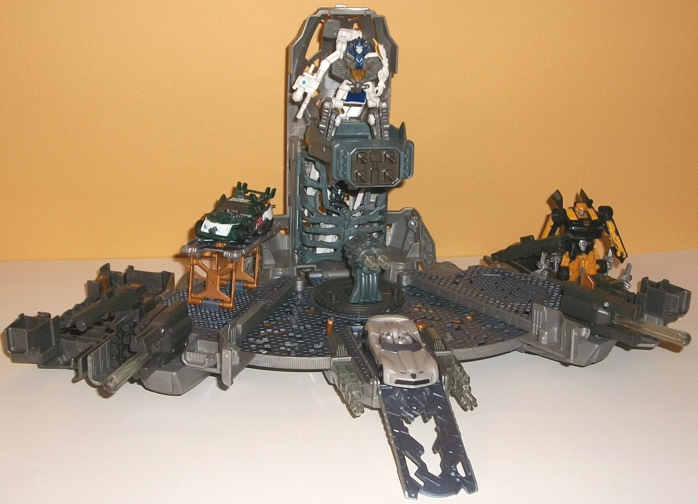

 
Size : Legion
Difficulty of Transformation : Very Easy
Color Scheme : Light milky gray, white, metallic dark blue, and some metallic gold
Individual Rating : 6.8
Allegiance
: Autobot
Price
: $30 (U.S.)
 Autobot
Roller
Autobot
Roller


Size
: Legion
Difficulty of Transformation
: Very
Easy
Color Scheme
: Light milky gray,
white, metallic dark blue, and some metallic gold
Individual Rating
: 6.8
Roller's vehicle mode
is a drone meant for space missions. It's a pretty cool, rather unique
vehicle mode, and certainly fits both the movie line and the set he comes
with, given where the Ark landed in the movie. There are certainly things
to like about this mode; the long manipulator arm can move at four places,
and both of the top satellite/radar pieces can rotate up-and-down as well.
(Unfortunately, the end "claw" on the arm can't open or close, but it IS
sized to hold a Cyberverse weapon or accessory.) The color scheme of white,
gray, and blue is also fairly accurate to the "real-life" kind of drones
Roller is meant to be emulating here, with the blue and white really contrasting
against each other well. The gray is, sadly, that blah light milky shade
used on far too many movie TFs, and I would've preferred a darker and/or
more metallic-looking shade. Regarding another downside, Roller has some
pretty obvious robot mode extras here; his upper legs poke out on the rear
end, and the robot head and one of the shoulders are also pretty visible
in between his front treads.
Roller's robot mode
is a bit awkward in respect to its proportions, though it is a bit large
compared to most Legion-class figures. The legs are a bit long proportionally
and come out at the hips a bit too much; also, with the way his arms transform,
there's a large cavity in his chest for the ball socket joint for his right
shoulder, while the left arm is much longer than the right and quite awkward-looking.
Roller also has the solar collector panel piece-- and part of his manipulator
arm-- sticking out a bit behind his back, but for the most part it stays
out of the way of movement, so I don't consider it that big of a deal.
The detailing on Roller is extensive even for a Movie toy, though, with
almost too much intricate mold detailing on his chest, right arm, and head,
which look appropriately alien like many of the Movie toys, though admittedly
just from looks he doesn't have much personality. The gold paint on his
stomach and shoulder also go really well with the white and blue, and add
just that extra touch of color that Roller needed. For articulation, Roller
is a bit above-average for the size class, being able to move at the shoulders,
the elbow on his right arm, and at the hips and knees, with the right shoulder
and hips being on ball joints for added range of movement. Unfortunately,
it's hard to get his overly-long left arm in a position that DOESN'T look
weird, but other than that you can get him into some pretty nice poses
for the size class.
 Autobot
Ark
Autobot
Ark


Difficulty of Transformation
: Very
Easy
Color Scheme
: Milky moderately dark
gray, light milky gray, metallic silvery blue, light pale greenish blue,
and some metallic bronze, bronzish brown, and clear plastic
Individual Rating
: 7.8
In its vehicle mode,
the Ark is exactly what you think it'd be-- a large spaceship accessory
for the Cyberverse-scaled figures. It looks pretty darned accurate to how
it appeared in the movie (albeit completely undamaged), and the colors
are generally pretty on-the-ball too-- it's mostly two different shades
of gray in this mode, but there are some bronze bits of plastic and paint
showing through here and there, particularly on the guns and "missile pack"
detailing on the top. The cockpit window is silver-- something I wish could've
extended to the rest of the rather boring gray plastic, but admittedly
that's probably a bit unrealistic given how much paint it would've taken.
In this mode, the Ark has two gun accessories that can be plugged into
one of many ports almost all along the ship, and there's also several ports
for Cyberverse-sized weapons, so if you have the accessories you can REALLY
pump up this mode to rather obscene levels. There's also two front-mounted
cannons in this mode, each of which hold a large clear missile, though
only one of them has a spring-loaded mechanism that allows it to be fired.
You can open up the cockpit to fit a Cyberverse-scaled figure inside, but
be warned-- the pressure pad on the floor of the cockpit is quite sensitive
and even with a Legion-class figure inside, will activate a long "metal
groaning" sound that continues indefinitely, with barely-visible yellow
lights blinking inside of the ship. A REAL design oversight, there, and
very annoying. Pressing on the round bronze button near the back of the
cockpit, however, will emit a straightforward "firing" sound effect with
the two transparent guns at the bottom of said cockpit flashing yellow
for about two seconds.
Pulling the Ark apart
at the sides will cause three transparent pieces-- the guns at either side
of the center platform and the double-barreled turret-- to blink yellow
while a transforming sound is made. (Pushing the Ark back together via
those same parts will cause the same transformation sound to emit, but
in reverse-- as you'd expect.) From this point, all you need to do is flip
out the sides once more and then flip up/out a few minor ramps, and you've
got the Ark in its base mode! It's scaled nearly perfectly for Legion-sized
figures, but unfortunately Commander-class figures end up being a bit too
large proportionally for it. One thing I will say for this mode-- practically
the ENTIRE floor is covered in metallic blue paint, which looks AWESOME
next to the randomly-missing honeycomb pieces in the floor. There's also
alien-tech mold detailing pretty much everywhere, even thoguh a lot of
it isn't painted any color beyond the metallic blue, unfortunately. As
for gimmickry, well, that's pretty much what this mode is made for. There's
a space on the "tower" to place a figure; an opening and closing "cage"
at the base of the tower for imprisoning any enemies; a turret with a rotating
platform near the center (pressing the round button will cause the turret
to blink yellow while emitting firing noises); a ramp at the front end
where, if you press back on the bronze lever, will cause the top part to
tip up, letting a Legion-class figure on the top of said ramp "roll out"
(be warned, though, it has the same pressure-sensitive sound effect problem
as the cockpit does in vehicle mode, though when you let the vehicle go
a "blasting" sound is emitted, with the two transparent cannons on the
side blinking yellow); a collapsible "repair bay" on the right-hand side
with its own manipulator arm (that can only move at one point, unfortunately);
and finally, a five-pronged.... thing on the far left end of the base mode.
What this thing is I'm not
entirely
certain, but given detailing
and where you place a figure in the midst of the five fold-out prongs that
look a bit like the "pillars" in the movie, I'd imagine it's a teleporter.
Oddly, the section on the far right side doesn't have anything there; it's
just a hollowed-out section of the bottom of the Ark mode, which is kind
of an eyesore and a bit of a bummer. The missile-firing cannons and missile
packs next to them can be detached easily in this mode and moved to one
of the other ports on the playset. Another super-cool feature is that the
ends of this mode feature C-clips and "rods" for said C-clips, allowing
you to attach some other, smaller, Cyberverse playsets to the Ark to create
an even bigger playset! Now THAT'S some awesome thinking.
How much I recommend this Autobot Ark set depends entirely upon how much you like playsets. For those who have a lot of Cyberverse toys and want a base to display/play with them in, this is a pretty decent set that's easy to transform and has an awesome vehicle mode to boot (even if the cockpit sounds are very annoying in that mode, and I wish some things in the base mode were scaled a bit more to Commander-class figures). If you're somebody who simply prefers "straight-up" Transformers, though, this $30 set definitely isn't WOW-worthy enough to purchase; even though this is the only way you can get Roller, he's definitely not that great of a Cyberverse figure to purchase the whole set for.
Reviews by Beastbot